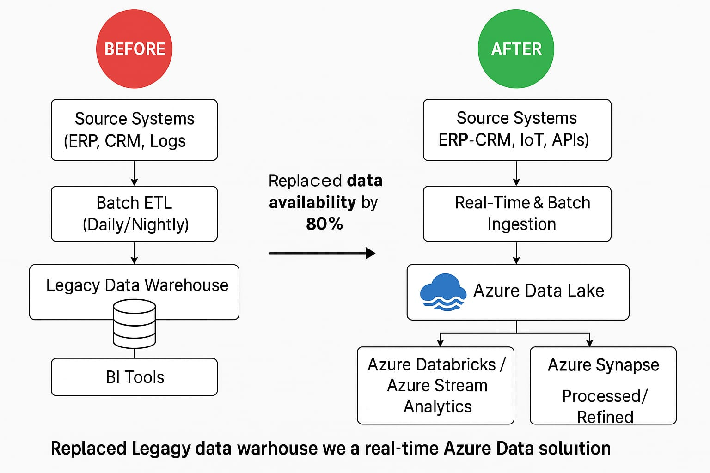
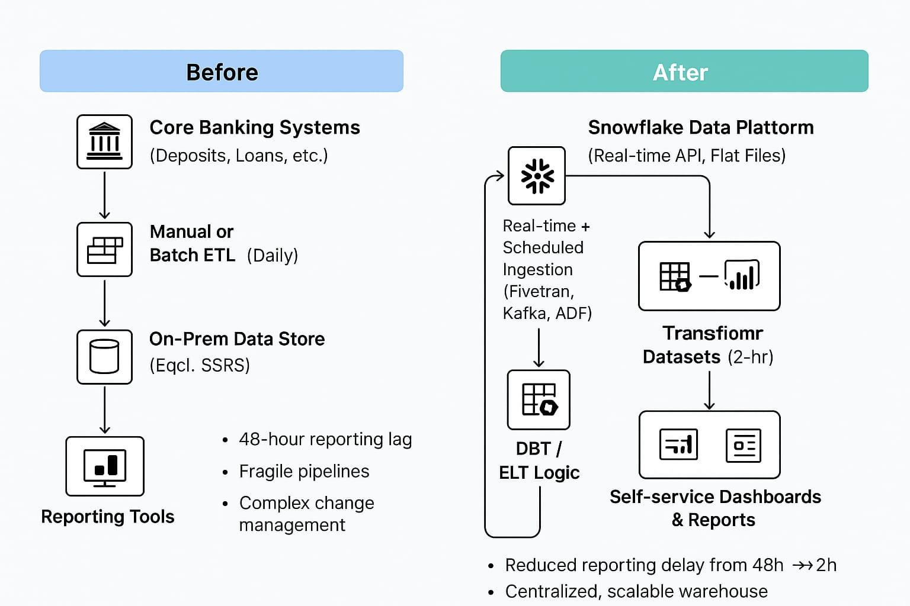

Overview
Durga Analytics helps organizations modernize legacy data platforms into agile, cloud-native ecosystems that drive operational efficiency and real-time decision-making.
Key Capabilities
- Cloud Migration of legacy databases and ETL frameworks
- Data lake & lakehouse architecture setup
- Modern ingestion frameworks (batch & real-time)
- Data cataloging and metadata management
- Modern BI tools and dashboard refresh programs
Approach
1. Assessment: Audit current systems, data sources, usage & quality
2. Planning: Build a cloud migration plan with modernization milestones
3. Execution: Rebuild pipelines, optimize performance, validate outcomes
4. Enablement: Train teams, deploy governance, and automate operations
Benefits
- Accelerated time-to-insight with scalable cloud solutions
- Reduced total cost of ownership
- Future-proof architecture that supports AI and ML adoption
- Enhanced data accessibility, quality, and governance
Case Highlights
-
Replaced legacy data warehouse with a real-time Azure Data Lake solution, improving data availability by 80%
Pre Architecture: Monolithic on-premise data warehouse with batch ingestion, limited scalability, and delayed reporting cycles (24–48 hours).
Post Architecture: Cloud-native Azure Data Lake solution with real-time streaming ingestion, scalable compute/storage, and modern analytics stack enabling 80% faster data availability.

- Built ingestion and reporting platform on Snowflake for a retail bank, reducing reporting delays from 2 days to 2 hours
-
Built ingestion and reporting platform on Snowflake for a retail bank, reducing reporting delays from 2 days to 2 hours
Pre Architecture: Fragmented on-prem databases (Core Banking, Cards, CRM) feeding a legacy EDW via nightly/weekly batch ETL (SSIS/hand-coded scripts). Long data latency (T+2 days), duplicate logic in Excel/desktop BI, limited scalability during month-end, manual data quality checks, and slow onboarding of new data sources (4–6 weeks).
Post Architecture: Central Snowflake multi-cluster warehouse on cloud object storage; automated ingestion (change data capture + incremental batch + near real-time streams via Kafka/Fivetran/Snowpipe), standardized raw → curated → semantic layers (dbt / SQL). Orchestrated transformations (Airflow/Prefect) with automated data quality tests (Great Expectations) and role-based security (RBAC + masking). Unified metrics layer powering self-service BI dashboards; SLA-driven pipelines delivering refreshed data every 15–30 minutes (2-hour → near real-time), accelerating analytics & regulatory reporting.
